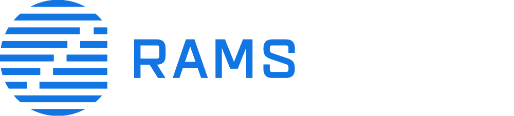
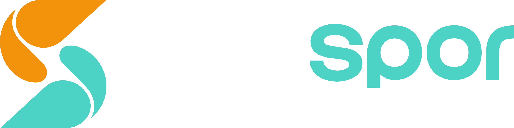
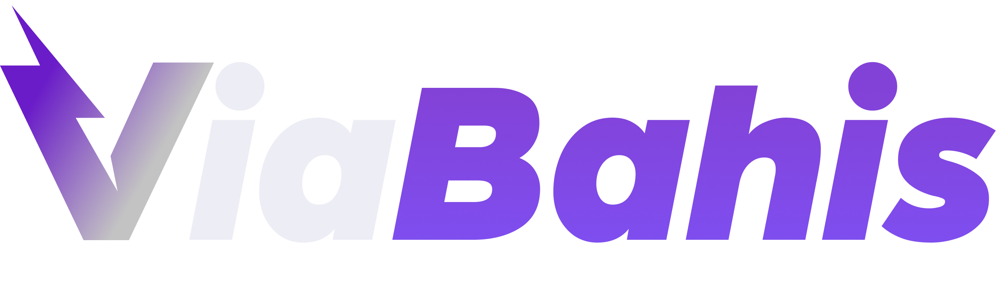
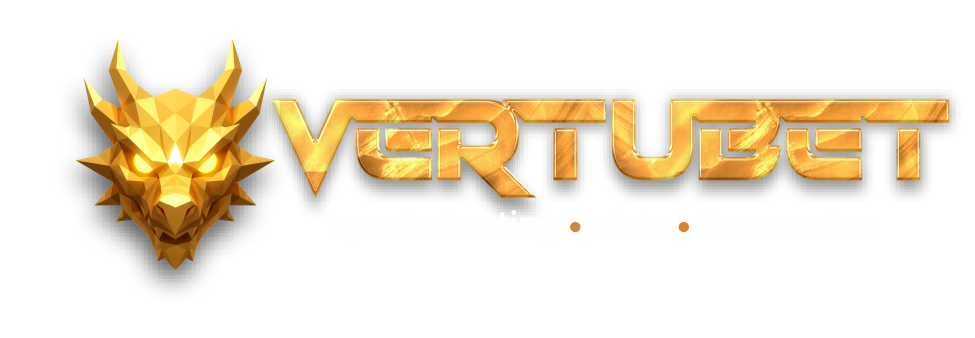

#gerikalma
Dijital Dünyada İzinizi Bırakın
Markanızın potansiyelini modern tasarım, stratejik dijital çözümler ve yaratıcı vizyonumuzla açığa çıkarıyoruz. Sadece var olmayın, fark yaratın.
Markanızın potansiyelini modern tasarım, stratejik dijital çözümler ve yaratıcı vizyonumuzla açığa çıkarıyoruz. Sadece var olmayın, fark yaratın.
Dijital ekosistemde markaların sadece var olmasını değil, stratejik yaklaşımlarla sektöre yön vermesini sağlamak; yaratıcılığı veriyle harmanlayarak sürdürülebilir başarı hikayeleri inşa etmektir.
Virex Media dünyasından kareler.


Güvenilen Markalar Bizimle Büyüyor





İşinizi büyütmek için uçtan uca dijital çözümler sunuyoruz.
Bütünleşik İçerik Stratejisi ve Algoritma Optimizasyonu
Yüksek Performanslı Büyüme ve İş Ortaklığı Yönetimi
Profesyonel Moderasyon ve Aktif Üye Kazandırma
Biz Virex Media olarak her platformun ihtiyacına özel, birbirleriyle entegre çalışan üç premium bot sistemi geliştirdik. Operasyonel yükünüzü %70'e kadar azaltın.
Niyet Okuyan Hibrit AI Kalkanı
Otonom Topluluk & Etkileşim Botu
Premium CRM & Destek Otomasyonu
Platforma özel ücretsiz demo sunuyoruz.
Kurulum dakikalar içinde tamamlanır. Telegram'dan çıkmadan 3 botu tek panelden yönetin.
🚀 Hemen Demo Talep EdinDemo'dan kuruluma kadar her şeyi biz hallederiz.
@virex_uzay üzerinden bize yazın. Platform ihtiyaçlarınızı dinleyelim, size özel demo sunalım.
Ekibimiz botları grubunuza entegre eder. Marka adı, kurallar ve panel ayarları yapılandırılır.
Botlar aktif, topluluk koruması başladı. Siz sadece Telegram panelinizden takip edin.
Biz sadece bir dijital ajans değil, işinizin büyüme ortağıyız. Teknolojiyi sanatla birleştiriyor, kullanıcı deneyimini merkeze alan tasarımlar üretiyoruz.
Mutlu Müşteri
Tamamlanan Proje
Yıllık Deneyim
Destek
Aklınızdaki soruların cevapları burada. Daha fazlası için bize yazın.
Evet. Mevcut grubunuza dakikalar içinde entegrasyon yapılır. Grubun yapısını veya üye listesini bozmaz. Tek yapmanız gereken bize grup bağlantısını iletmek.
Hayır. Virex Media ekibi tüm kurulumu sizin adınıza yapar. Siz sadece Telegram'daki panel üzerinden ayarları yönetirsiniz. Kod yazmaya gerek yoktur.
Google Gemini yapay zeka motoru ile her mesajın niyetini analiz eder. Kelime yasaklamanın ötesinde, bağlamı anlar. OCR teknolojisiyle resim üzerine yazılmış içerikleri de tarar. Reaksiyon süresi ortalama 0.8 saniyedir.
Yüksek uptime garantisiyle kesintisiz çalışır. Gece, gündüz, tatil fark etmeksizin aktiftir. Herhangi bir teknik sorun oluştuğunda ekibimiz anında müdahale eder.
Paketinize göre tek gruptan kurumsal çok gruplu yapıya kadar esnektir. Detaylı bilgi ve fiyatlandırma için @virex_uzay üzerinden bizimle iletişime geçin.
Tamamen Telegram tabanlı çalışır. Harici web paneli, ek lisans veya özel yazılım gerektirmez. Yöneticiler her şeyi Telegram arayüzünden yönetir.
Yeni projenizi konuşmak için sabırsızlanıyoruz.